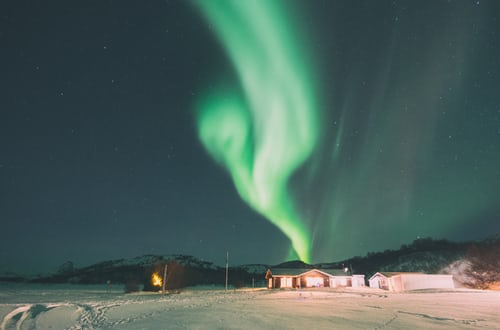
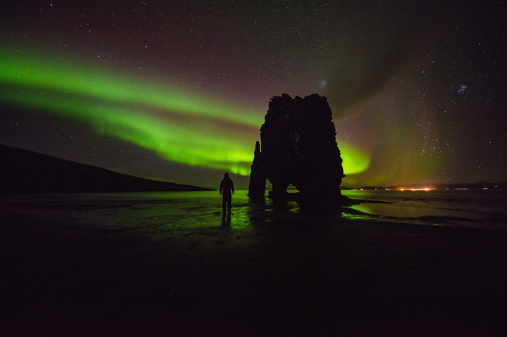

When is the best time to see the Northern Lights in Iceland?

The Northern lights can be elusive and there are a few factors you need to keep in mind when trying to witness this great natural phenomenon. Weather, season and location all matter and by taking them into account you can greatly increase you chance to see the Auroras.We often get the question: When is the best time to see the Northern Lights? There’s both a simple and complicated answer to that question. The simple answer is: From September to mid-April, or when the nights are dark and cold. After equinox in September, the nights in Iceland are fully dark and that alone increases the chances of seeing the Northern Lights. You might find some sources stating that the best time is November – February, but if you decide to visit Iceland during these months please consider that the weather can be unforgiving, lots of rain and snow, which can seriously reduce your chances to see the Northern Lights.
Here is the longer and more complicated answer.
Iceland is one of the best places in the world to see the Northern Lights, due to some very important factors. First, Iceland is close to the Arctic circle and though we enjoy long and bright summer nights, in winter the nights are dark (but not full of terrors) and long. Guaranteed darkness is the single most important factor in seeing the Northern Lights, in daylight the Auroras are invisible.Weather is also a huge factor and the second most important one. To see the Northern Lights the skies need to be clear, preferably very clear and empty of clouds. Iceland is an island in the middle of the North-Atlantic. Weather changes are frequent here, even more so in winter. You want to have, as mentioned before, clear skies and if rain or snow is in the forecast, the chances for seeing the Northern Lights are greatly reduced.
Location is everything!
Finally, just as in the real estate business, location is critical. The chances you’ll see the Northern Lights in Reykjavik, even on clear, cold nights, are minimal, simply due to light pollution. Cities light Reykjavik are lit up in the night and this diminishes your chance to see the Auroras, so you need to leave the city and head out to the countryside, where there are few, if any, lights. Of course, there come times when the Northern Lights are so strong that they are visible in the city, but we do not recommend that you rely on that to happen. There are many great places in Iceland to see the Northern Lights and you don’t need to travel far from Reykjavik to find perfect locations for seeing the Northern Lights.
When are the Northern Lights visible in Iceland?
Please remember, that the Northern Lights are a natural phenomenon and there’s never any guarantee that they will lit up the sky the moment we decide to look up. Hunting for the Auroras requires patience and warm clothes. If you make sure that you’re dressed in warm clothes and you are willing to wait for the Auroras, your patience can be richly rewarded. Happy hunting!
What are the Northern Lights?
There are many legends about the lights. In medieval times seers and fortune tellers believed that the lights were harbingers of woe, war and famine. The Menominee Indians of Wisconsin believed the lights indicated where the spirits of great hunters and fishermen, called manabai’wok, could be found. Many different cultures believed that the lights were spirits, either of their people or the animals that they hunted.After diving into the subject it’s clear that “Solar winds hitting the earths magnetic shield creating color” is just not going to cut it! The Northern Lights are a series of discharged particles emanating from the sun. These tiny charged beauties gush out of enormous dark spots on the sun’s surface creating clouds which travel over 150 million kilometers before reaching Earth.To enter the Earth’s ionosphere the particles need to become tangled in the magnetic field and be dragged down to the poles. When the lights are dragged into the poles they collide with gasses. This collision is what creates the Auroras. The colour of the lights depends on what types of gasses the discharged particles collide with. For instance a collisions with oxygen typically produce green and yellow lights while contact with nitrogen results in reds, violets, and blues. The shape of the lights depends on the magnitude of the solar flares. During periods of minimal solar flares, shapes tend to be less dramatic. But in cycles of strong flares, lights dance, wind, loop and weave through the night sky.
Where to see Northern Lights in Iceland?

Iceland is the perfect place to see Northern Lights, but where to go to spot them? The answer is pretty easy: the whole Iceland is perfect to see Northern Lights. As a matter of fact, when the phenomenon is particularly intense, you might be able to see it even around Reykjavik, despite the light pollution.That said, if you are planning your trip to Iceland and want to make sure you don’t miss the chance to see Northern Lights, you better consider to visit locations away from light pollution and facing North, since The Northern Lights usually start showing up in the North.The spectacular Skógafoss Waterfall, the Jökulsárlón glacier lagoon or the Stokksnes beach are some of the most evocative places to admire the Northern Lights surrounded by the perfect northern natural landscape.